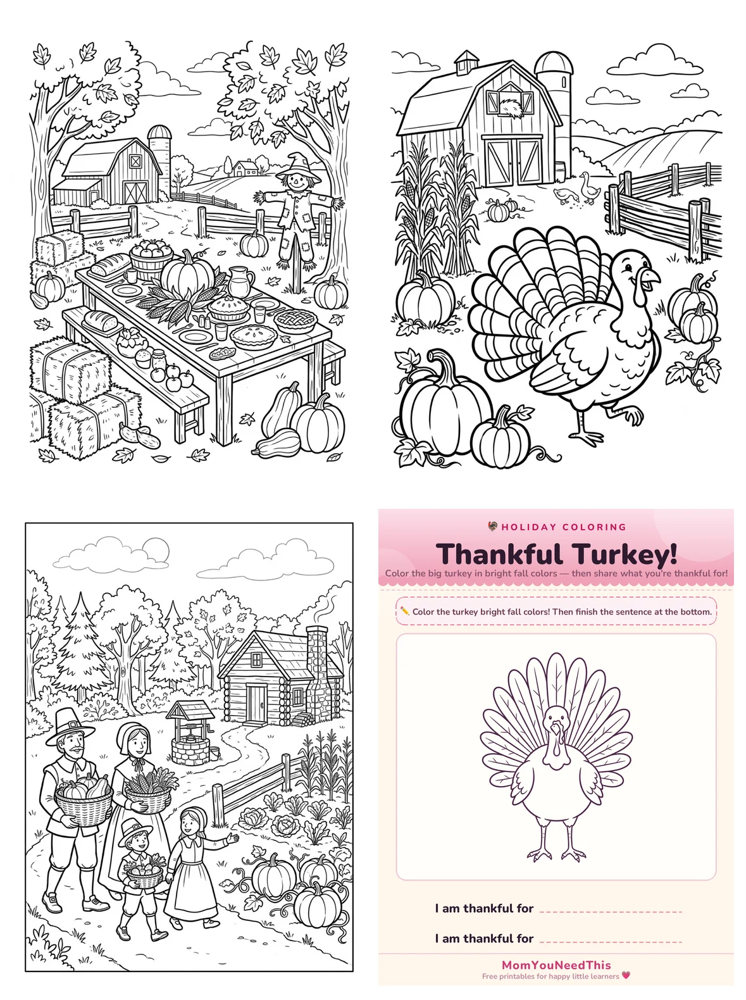
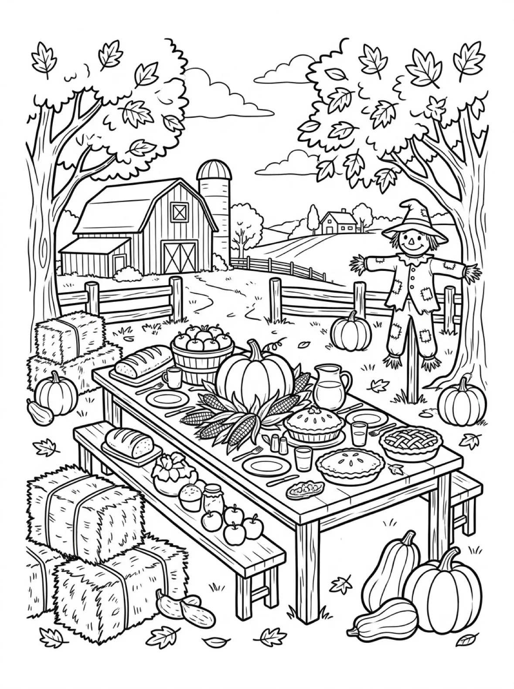
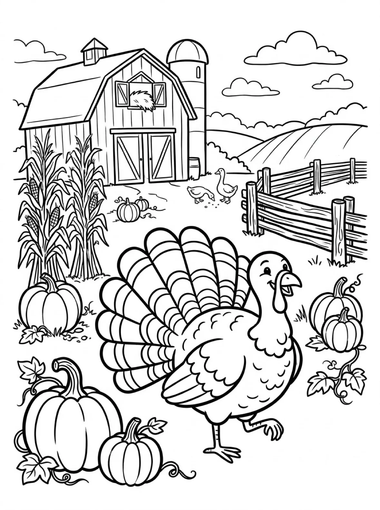
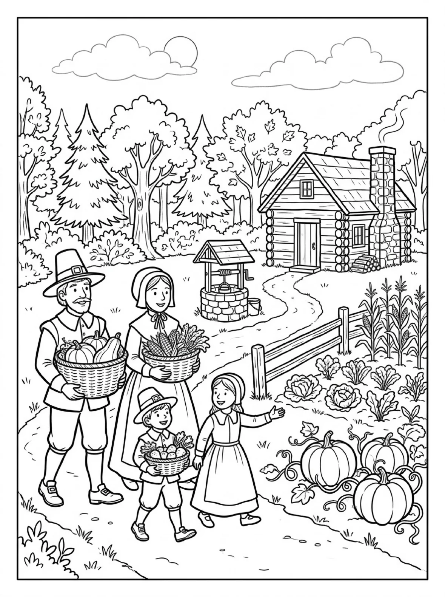
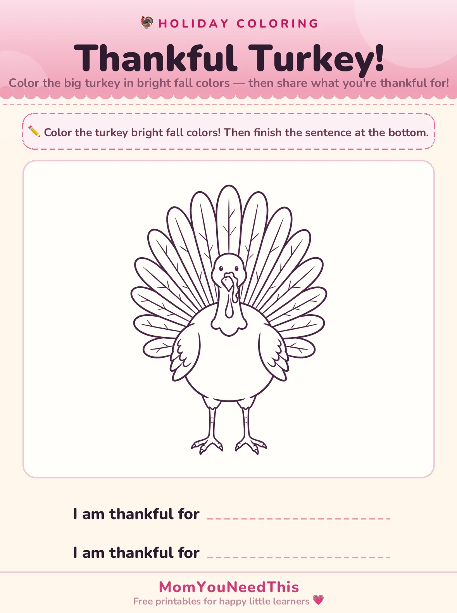

Thanksgiving Coloring Pages For Kids Turkeys, Pumpkins & Thankful Fun
Keep little hands happy while the turkey roasts. These Thanksgiving coloring pages feature friendly turkeys, pumpkins, and fall scenes — plus gratitude pictures that spark sweet holiday conversations.
Last updated:
Quick Answer
These free printable Thanksgiving coloring pages bring fall fun to toddlers and preschoolers — friendly turkeys, pumpkins, autumn leaves, cornucopias, and gratitude-themed pictures to color. Simple bold outlines suit little hands. Download and print at home with no signup needed — perfect for the holiday table.
At a Glance
- Ages: Toddlers and preschoolers
- Activity: Coloring turkeys, pumpkins, autumn leaves and cornucopias
- Skills: Coloring and gratitude vocabulary
- Format: Printable coloring pages (PDF)
- Cost: Free, no signup
🦃 Thanksgiving Coloring Fun
Kids color cheerful turkeys, pumpkin patches, cornucopias, and autumn leaves, plus special “thankful for...” pages where they draw what they are grateful for. The bold, simple outlines are designed for toddlers and preschoolers, with trickier details for older siblings.

🖨️ Download Your Free Thanksgiving Coloring Pages
Print a stack for the kids’ table, the classroom party, or a quiet afternoon. The gratitude pages make lovely keepsakes — no signup needed.
⬇️ Download Free Printable 🖨️ Print(opens in new tab)🎁 Free printable for toddlers & preschoolers
🎃 Harvest Table Coloring Page

🎨 Download the Harvest Table Coloring Page
A long harvest table set outdoors on the farm, loaded with a pumpkin centerpiece, ears of corn, a basket of apples, loaves of bread and three pies — with hay bales, a scarecrow, the barn and the silo behind it — bold outlines, big spaces, zero signup.
⬇️ Download Harvest Table Page 🖨️ Print Harvest Table Page(opens in new tab)🎁 Free printable for toddlers & preschoolers
🦃 Farmyard Turkey Coloring Page

🎨 Download the Farmyard Turkey Coloring Page
A proud turkey showing off its big fanned tail in the farmyard, standing among the pumpkins with the barn, tall corn stalks, two geese and a split-rail fence behind it — bold outlines, big spaces, zero signup.
⬇️ Download Farmyard Turkey Page 🖨️ Print Farmyard Turkey Page(opens in new tab)🎁 Free printable for toddlers & preschoolers
🍂 Pilgrim Family Coloring Page

🎨 Download the Pilgrim Family Coloring Page
A pilgrim family — father, mother, son and daughter — carrying baskets of pumpkins, corn and apples toward their log cabin with its stone chimney and well, past the pumpkin patch and rows of corn — bold outlines, big spaces, zero signup.
⬇️ Download Pilgrim Family Page 🖨️ Print Pilgrim Family Page(opens in new tab)🎁 Free printable for toddlers & preschoolers
🦃 Thankful Turkey Coloring Page

🎨 Download the Thankful Turkey Coloring Page
Color the big turkey in bright fall colors, then finish the “I am thankful for…” lines — a sweet keepsake for the fridge or the classroom wall, no signup needed.
⬇️ Download Thankful Turkey Page 🖨️ Print Thankful Turkey Page(opens in new tab)🎁 Free printable for toddlers & preschoolers
🔍 Start A Thankful Tradition
Use the “thankful for...” page at dinner: everyone draws or writes one gratitude, then shares. Even toddlers can scribble-draw their answer. It is a simple ritual that often becomes the most remembered part of the meal.
💡 Why Holiday Coloring Is Worth Printing
Coloring keeps kids happily occupied during busy holiday prep, builds fine motor skills, and — with the gratitude pages — sneaks in meaningful reflection. A stack of printed pages is the easiest holiday entertainment there is.
🦃 Thanksgiving Holiday Coloring Pages for Grateful Kids
These thanksgiving holiday coloring pages celebrate gratitude with turkeys, pumpkins, cornucopias, autumn leaves, and thankful messages. Each page has one big Thanksgiving scene with bold outlines for little hands. Print thanksgiving holiday coloring pages for the holiday table or classroom.
Thanksgiving holiday coloring pages are perfect for keeping kids busy during holiday prep. Print a stack, set out crayons, and let children colour while dinner cooks. These thanksgiving holiday coloring pages turn waiting time into grateful time.
Finished thanksgiving holiday coloring pages make lovely table decorations. Place one at each seat as a placemat, or tape them to the wall for a gratitude display.
See Thanksgiving printable for more.
📚 Keep Exploring Holiday Coloring
- 🎁 Back to Free Coloring Pages Free printable coloring pages for toddlers and preschoolers.
- 🎃 Halloween Coloring Free printable Halloween coloring pages for toddlers.
- 🎄 Christmas Coloring Free printable Christmas coloring pages for toddlers.
❓ Frequently Asked Questions
What’s included in the Thanksgiving coloring pages?
Friendly turkeys, pumpkins, cornucopias, autumn leaves, fall scenes, and special “thankful for...” gratitude pages — all with bold outlines sized for toddlers and preschoolers.
Are these coloring pages really free?
Yes — every printable on MomYouNeedThis is 100% free to download and print. No signup, no payment, just tap the download button.
Can I use these at a classroom party?
Absolutely — they are made for it. Print a stack, add crayons, and you have instant, no-mess party entertainment that doubles as a take-home keepsake.
Are these thanksgiving holiday coloring pages free to print?
Yes — these thanksgiving holiday coloring pages are 100% free to download and print at home. No signup or payment needed.
Are these thanksgiving coloring book pages free to print?
Yes — every page is 100% free to download and print at home, with no signup or payment needed. Print a stack of turkeys, pumpkins, cornucopias, and “thankful for...” gratitude pages for the kids’ table.